Un thème par jour, une scène par thème. Chaque scène est entièrement calculée (simulation, mathématiques ou géométrie générative), rendue avec une lumière physique et animée en boucle. Chacune montre une transformation qui revient à son point de départ : la glace fond puis regèle, le verre se brise puis se refond, la rouille gagne puis disparaît. La version affichée à l’ouverture est un tirage parmi d’autres ; la touche N en produit de nouvelles.
AtelierComment ces scènes sont fabriquées : un thème, une skill Claude Code, une scène presque d’un seul jet → Le relaisTous les jours enchaînés en un seul plan : chaque scène joue sa boucle, puis passe la main à la suivante → StatistiquesCe que calcule chaque scène, et ce qu’elle coûte en code, en mémoire et en rendu →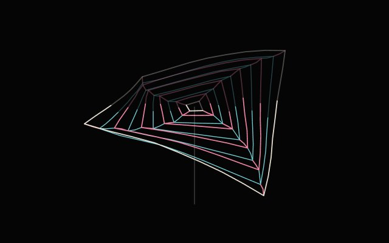
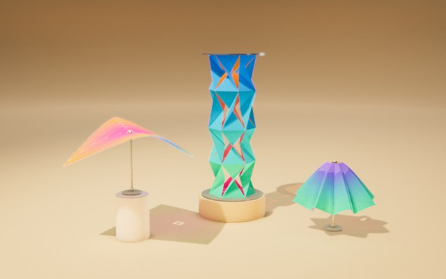
Un origami qui se plie seul
Des feuilles bicolores basculent d’une forme en selle à l’autre, puis une tour de prismes se met à plat étage par étage. Un solveur d’origami calcule les plis et la couleur visible de chaque face.
version légèredocumentation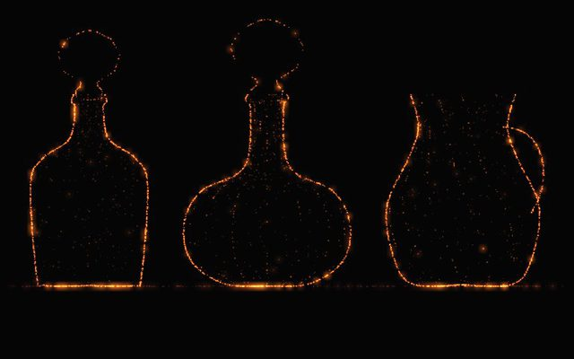
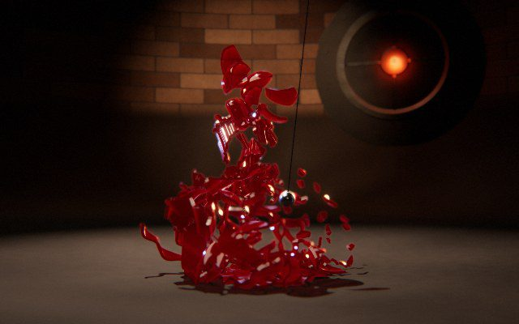
Un verre brisé, refondu, soufflé
Une pièce de verrier sort du bain, se brise en caméra rapide, puis ses éclats refondent pour donner la pièce suivante. Les fissures sont calculées exactement, éclat par éclat.
version légèredocumentation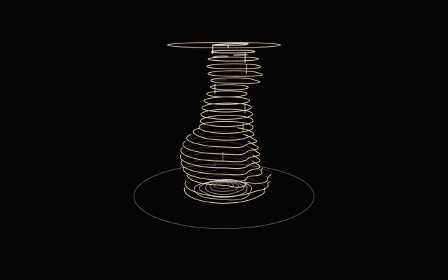
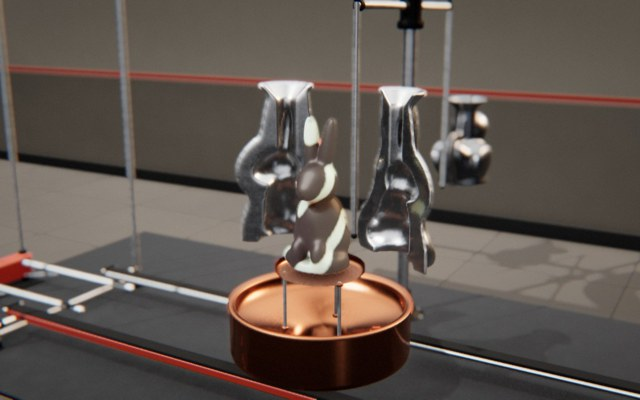
Une cire refondue en boucle
Un objet de cire fond sous une lampe, coule dans un moule, et l’objet suivant en sort. La fonte est simulée sur la carte graphique, avec une usine différente pour chaque graine.
version légèredocumentation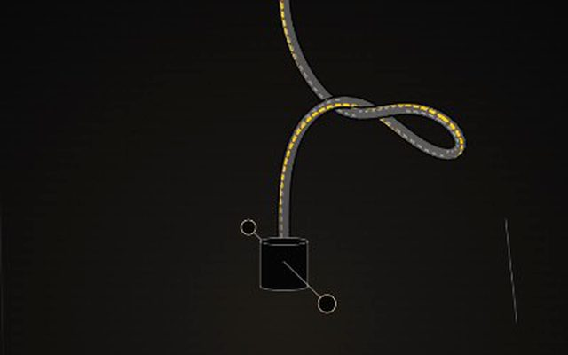
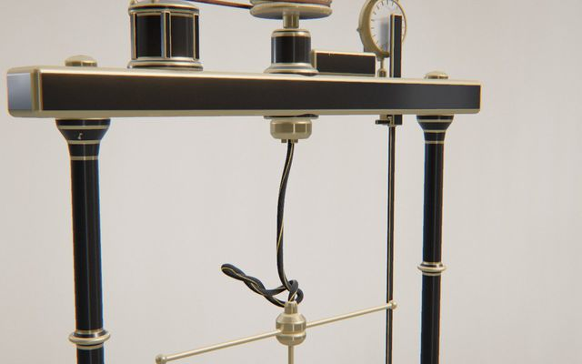
Une corde qui se vrille puis se démêle
Une corde tordue tour après tour finit par former une boucle, puis se démêle. Elle est simulée comme une tige élastique, en vérifiant que la torsion et l’enroulement se compensent (Lk = Tw + Wr).
version légèredocumentation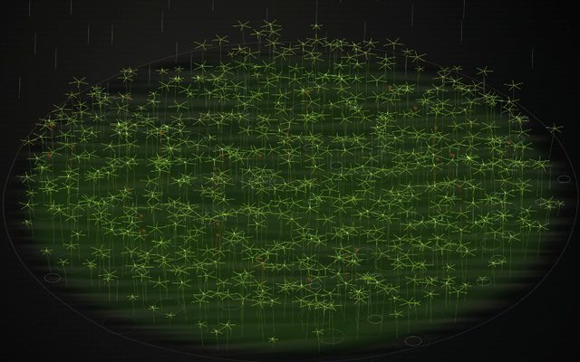
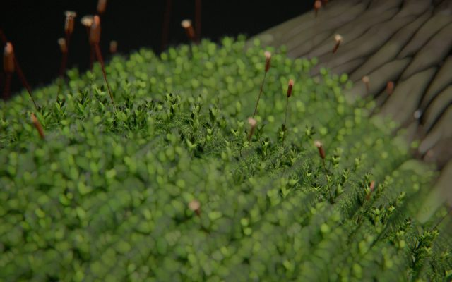
Une année de mousse sur une pierre
La mousse se retire dans les fissures de la pierre pendant la sécheresse, puis reverdit à l’averse. Sa croissance suit l’équation de Fisher-KPP, saison après saison.
version légèredocumentation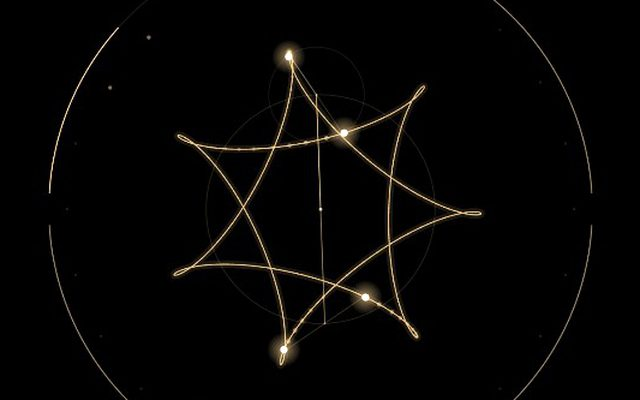
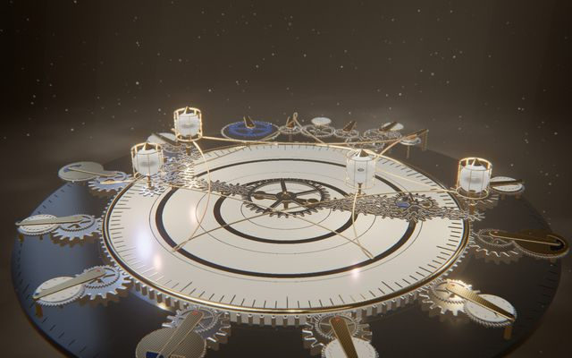
Une orbite et la machine qui la trace
Chaque graine donne une orbite nouvelle pour un système de plusieurs astres qui s’attirent. Une machine à engrenages reproduit ce mouvement et en dessine la trace.
version légèredocumentation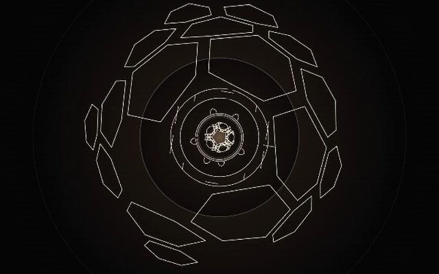
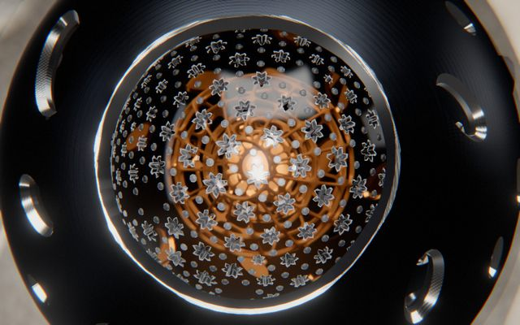
Des coquilles creuses emboîtées
Des coquilles creuses sont emboîtées les unes dans les autres à l’infini. Chacune est vue à travers l’ouverture (l’oculus) de la précédente, et la caméra descend de l’une à l’autre.
version légèredocumentation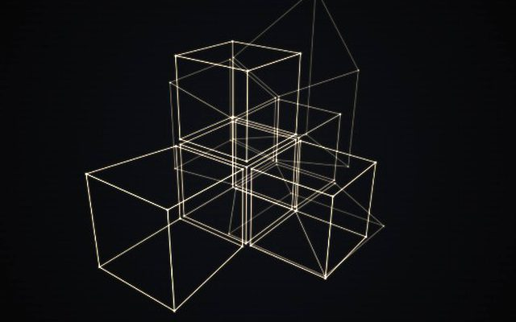
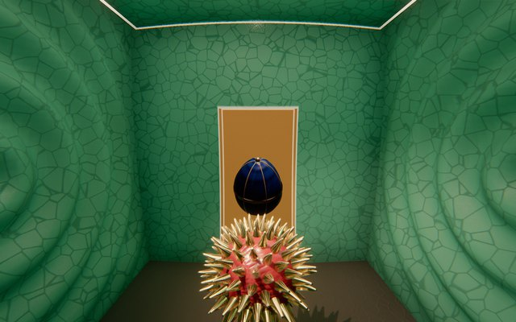
Un hypercube replié et traversé
Huit cubes se replient pour former un hypercube, puis la caméra passe de pièce en pièce pendant que l’objet tourne en quatre dimensions. L’objet est calculé en quatre dimensions, puis projeté à l’écran.
version légèredocumentation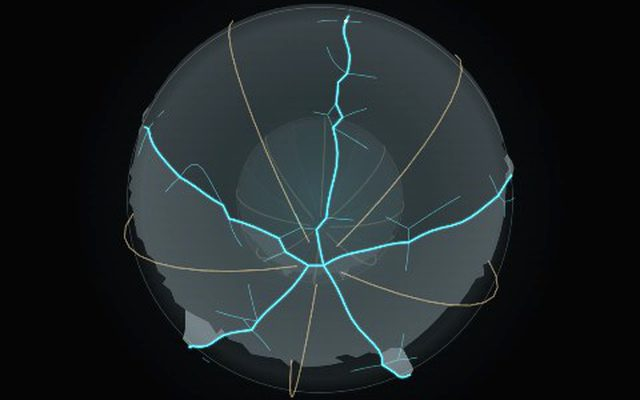
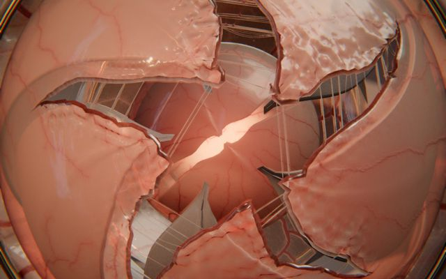
Des membranes tendues sur une armature
Des membranes parcourues de vaisseaux se tendent, puis se déchirent sur leur armature, et le cycle recommence. La simulation est exécutée sur la carte graphique.
version légèredocumentation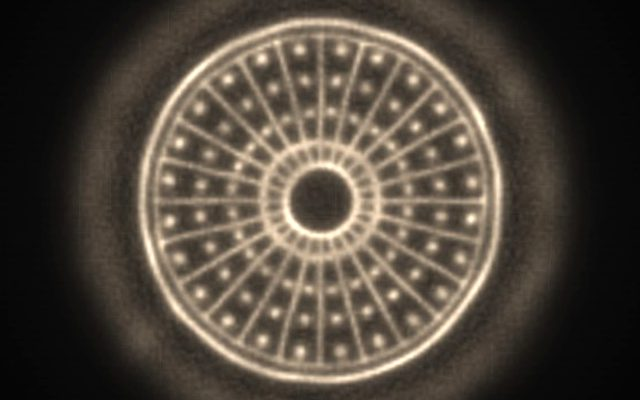
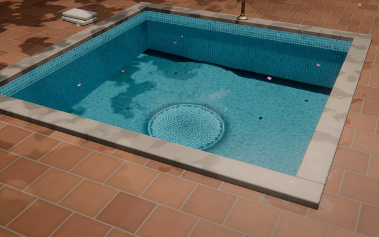
Un bassin au soleil
Des ondes convergent à la surface d’un bassin et la lumière dessine une figure sur le fond. La scène combine transport optimal, loi de Snell et retournement du temps.
version légèredocumentation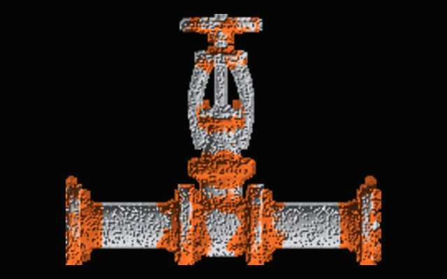
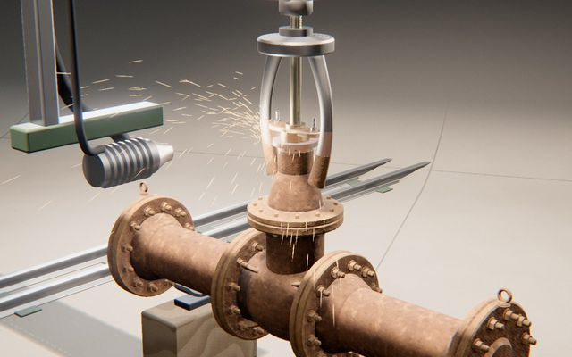
Une pièce rouillée puis décapée
Une pièce rivetée rouille sous les averses d’une saison, puis une machine la décape et ramène la scène à son état de départ. La corrosion est calculée sur la géométrie même de la pièce.
version légèredocumentation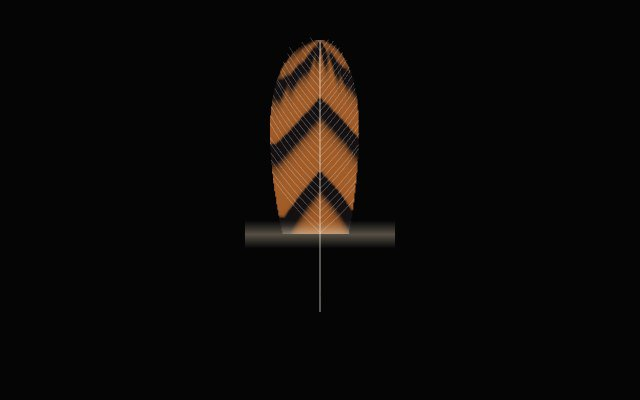
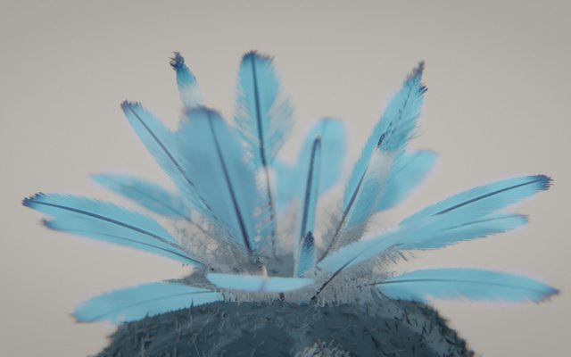
Une plume qui se déroule
Une plume sort roulée dans sa gaine et se déroule sans s’étirer. La croissance est calculée à la base de la plume (le collier), et le motif de sa surface par réaction-diffusion.
version légèredocumentation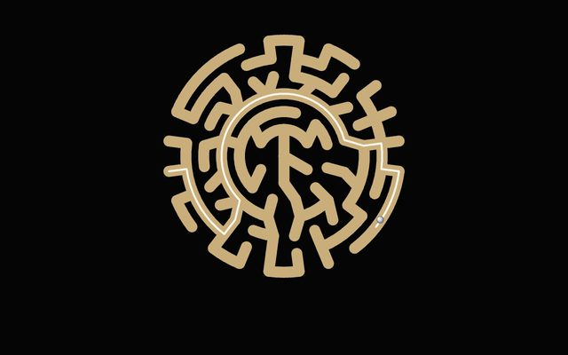
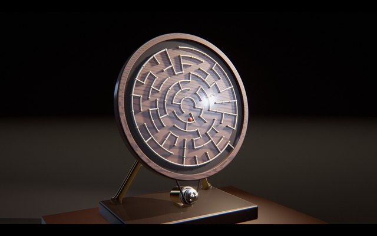
Un labyrinthe qu’on incline
Un automate incline ou fait tourner un labyrinthe, et la gravité conduit une bille jusqu’à la sortie. Les labyrinthes sont tirés par l’algorithme de Wilson, les rotations trouvées par recherche en largeur.
version légèredocumentation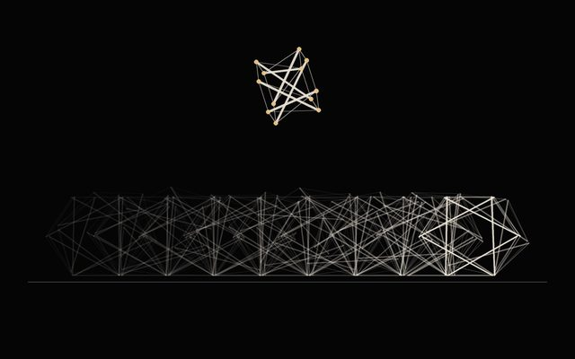
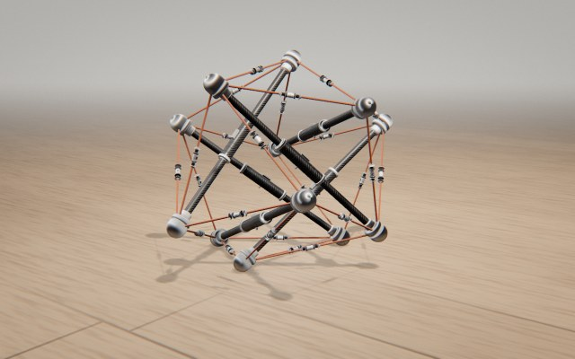
Des tenségrités qui avancent
Une troupe de structures à barres et à câbles avance en enroulant ses propres câbles, filmée en plans montés. Les barres rigides et les câbles, qui ne travaillent qu’en traction, sont simulés.
version légèredocumentation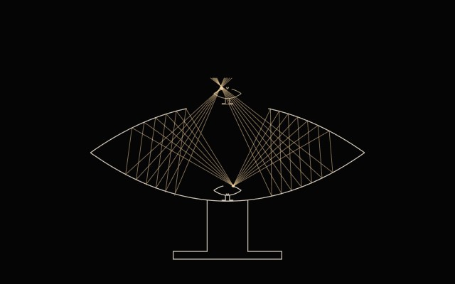
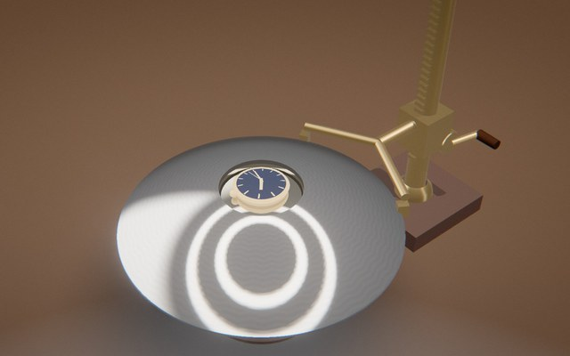
Un objet et son image dans un mirascope
Un petit objet est posé au fond d’un mirascope et son image flotte au-dessus de l’ouverture. Une coupe dans le couvercle montre les deux ensemble, puis la caméra plonge dans l’image, sans fin.
version légèredocumentation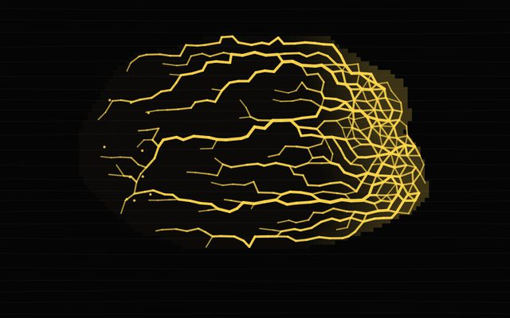
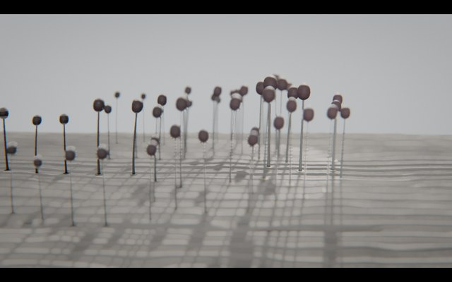
Un myxomycète qui fructifie
Sur du bois mort, un réseau de matière vivante s’étend, se condense en perles, puis se dresse en sporanges qui libèrent un nuage de spores. Le réseau suit le modèle de Tero, la fumée une simulation en 3D.
version légèredocumentation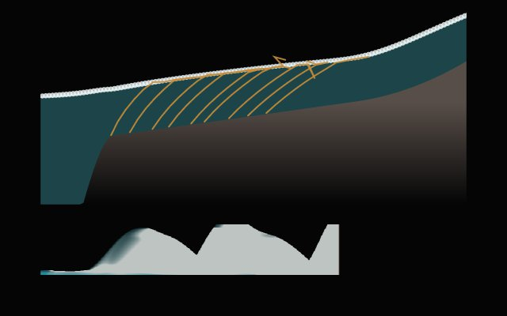
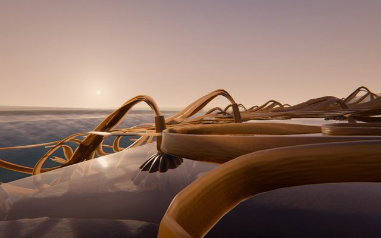
Des laminaires dans la houle
À chaque vague, les laminaires couchées sur la roche se dressent quand le front les atteint, puis le retrait les recouche. L’eau suit les équations de Saint-Venant, les algues sont simulées par XPBD.
version légèredocumentation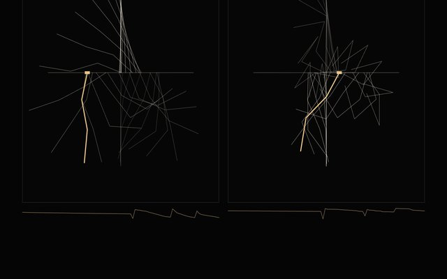
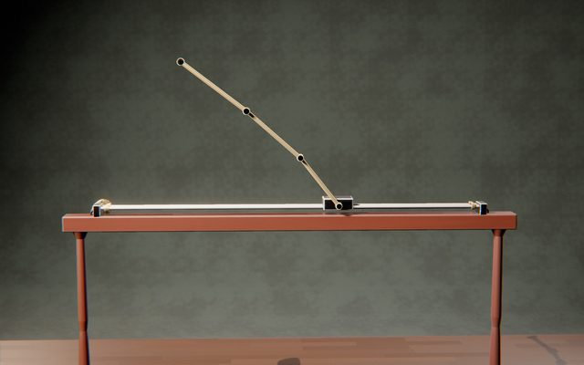
Une chaîne de pendules à l’envers
Un chariot, un bras, un coude motorisé ou un volant redressent une chaîne de pendules, qui reste immobile à l’envers puis se replie. Les mouvements sont calculés par optimisation sur la dynamique exacte de la chaîne.
version légèredocumentation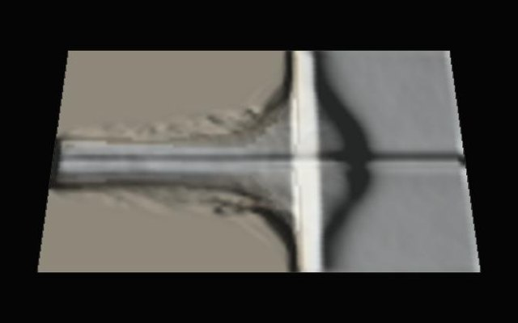
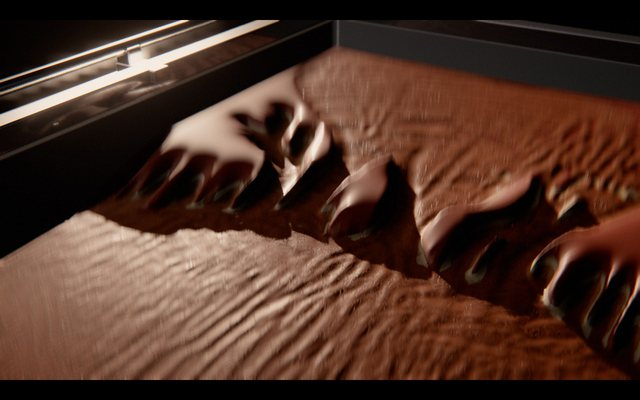
Une table d’érosion de laboratoire
La pluie, un courant ou un lac qui déborde creusent un sable stratifié, puis une lame repasse le sable pour restaurer la surface de départ. L’eau et le transport des sédiments sont simulés sur la carte graphique.
version légèredocumentation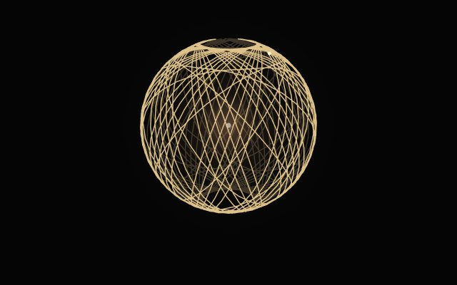
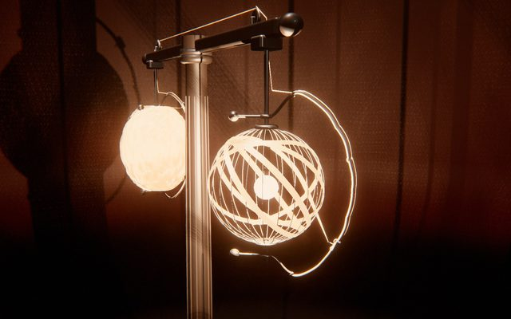
Deux lanternes et un ruban de soie
Un ruban de soie se dévide d’une lanterne et libère sa lampe, puis s’enroule sur la lanterne de l’autre bras d’un fléau, qui les échange ensuite. Le fil suit des géodésiques (Clairaut) sans se croiser.
version légèredocumentation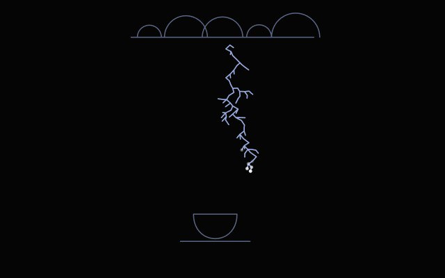
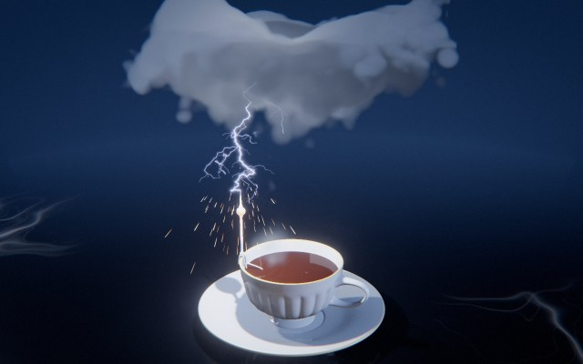
Un orage dans une tasse de thé
La vapeur d’une tasse forme un nuage d’orage qui pleut dans la tasse ; la foudre frappe le mât d’un thermoplongeur, dont la chaleur relance la vapeur. Les éclairs viennent d’un claquage diélectrique, le nuage est un volume éclairé de l’intérieur.
version légèredocumentation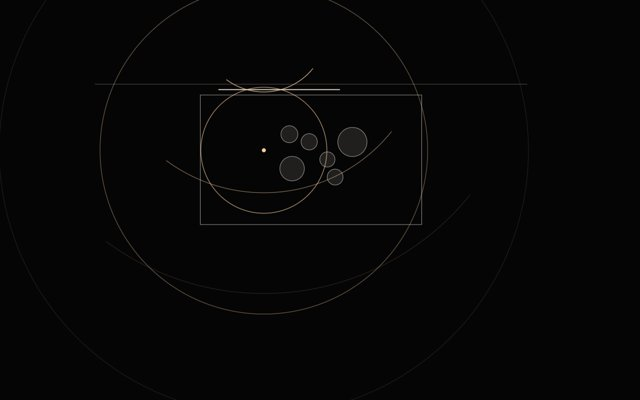
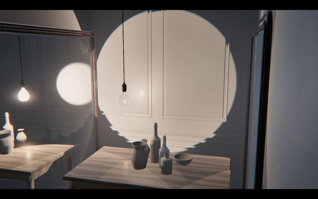
La lumière au ralenti
Un éclair de stroboscope est filmé à des centaines de millions de fois le ralenti : un anneau de lumière passe sur une nature morte, atteint un miroir et revient. Le calcul suit le temps de parcours de la lumière.
version légèredocumentation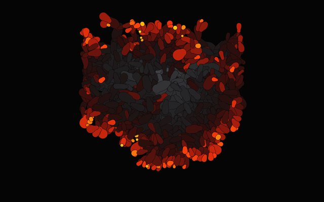
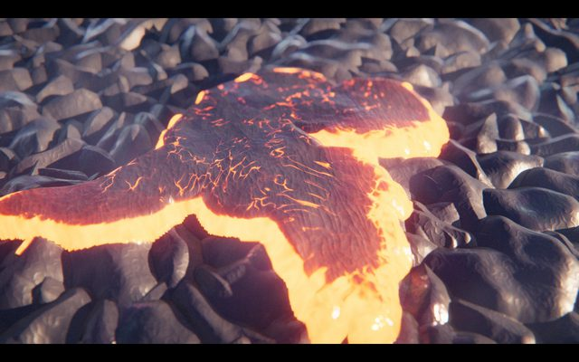
Un front de lave pāhoehoe
Une nappe de lave sort d’une fente, pousse des langues, se couvre d’une croûte, puis refroidit en lobes qui redessinent les pierres du début. Les ramifications sont tirées par marche aléatoire, le refroidissement combine conduction et rayonnement.
version légèredocumentation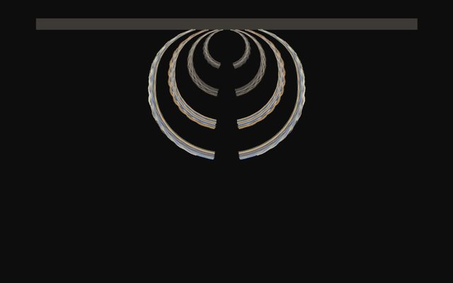
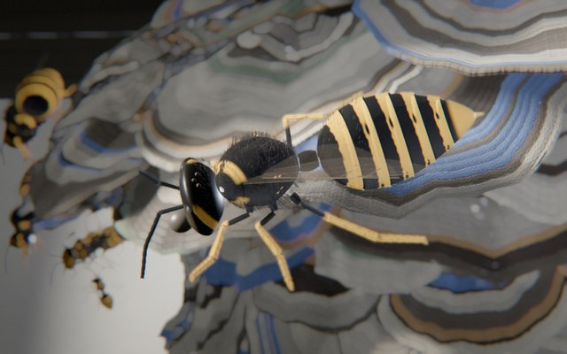
Un nid de guêpes pendant une saison
Une reine fonde un nid sous une poutre ; il grandit cloche après cloche, puis l’hiver le fonce et il tombe. Les écailles de papier sont drapées sur une pile de hauteurs, les bandes de couleur tirées par une chaîne de Markov.
version légèredocumentation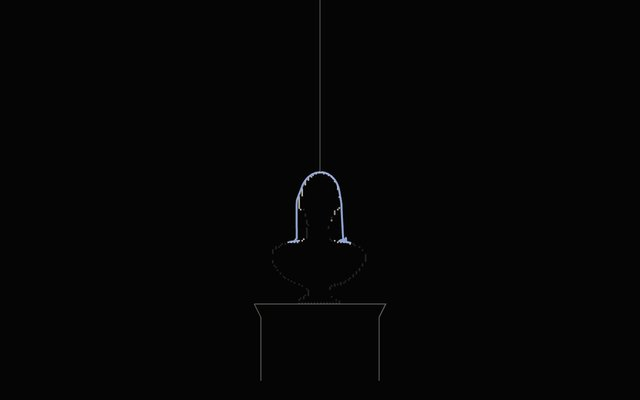
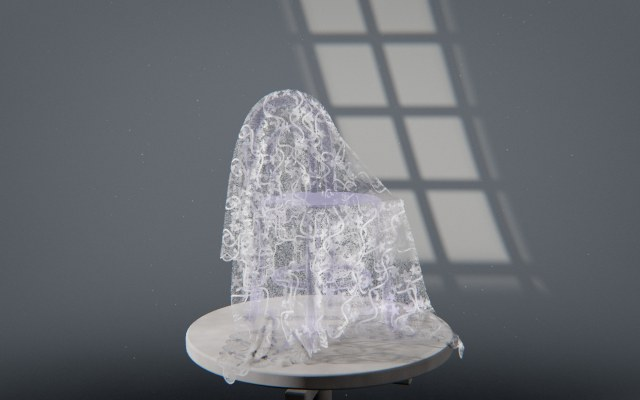
Une dentelle sur une statue absente
Une dentelle humide posée sur un socle dessine une statue, puis s’affaisse quand elle s’efface ; quatre cordons la soulèvent et la reposent sur une autre forme. L’étoffe est simulée sur la carte graphique, la statue n’existe que comme champ de distance.
version légèredocumentationUn tas de ferraille dont l’ombre devient un animal
Au soleil de minuit, l’ombre d’un tas sans forme (ferraille, bois flotté, tuyaux de cuivre) devient un renard vers 21 h, un lièvre vers 3 h, puis se défait. Chaque pièce est posée par un algorithme glouton dans la seule forme qui projette les deux figures à la fois, sans jamais en traverser une autre.
version légèredocumentationÀ paraître
À paraître
À paraître
À paraître